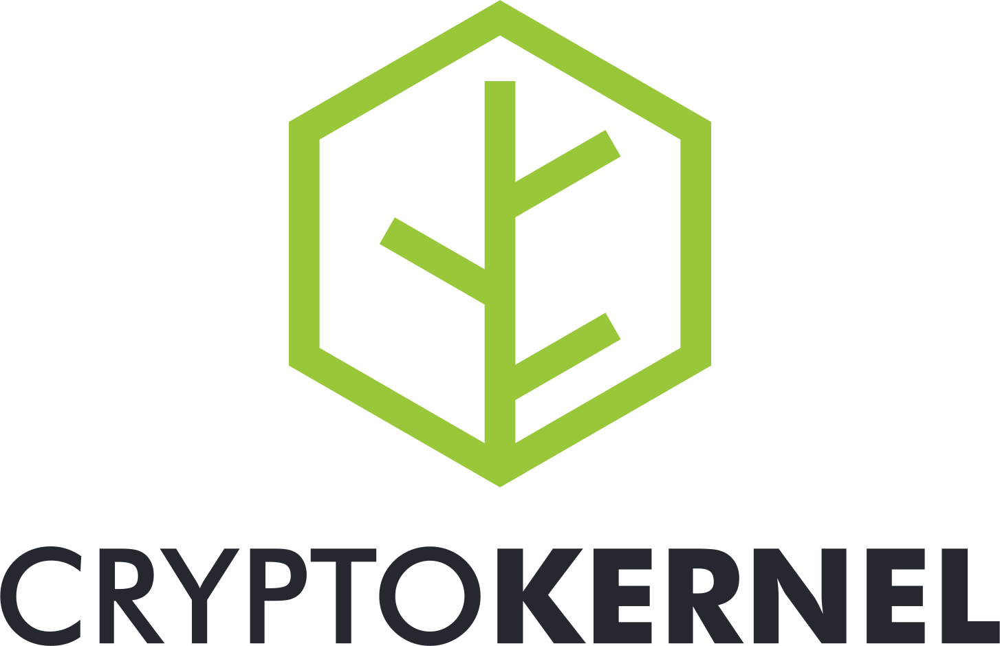

A blockchain development framework
Cryptokernel is a free software C++ library written by the MIT DCI for prototyping and deploying custom blockchains. Its easy to understand design provides a powerful base that can be extended at both a protocol and contracting level to fit your application’s specific requirements.
Features
- UTXO-based blockchain
- Peer-to-peer networking stack
- Multiple consensus algorithms
- Proof-of-Work
- Proof-of-Stake (ECTO)
- Permissioned round-robin
- Almost-Turing-complete transaction scripting in Lua 5.3
- Schnorr multi-signatures and signature aggregation
- Customisable transaction and block rules
- Customisable block reward functions
- Easy coin creation/bootstraping
- Reference wallet and RPC server/client
- Reference client-side Javascript web-wallet
- C++ API
- GNU GPLv3 licensed
K320
K320 was the first coin deployed using Cryptokernel and serves as the current reference implementation. Its name derives from its monetary policy – Milton Friedman’s K% rule at a rate of 320 basis points or 3.2% growth per year. K320 is designed to build up the initial money supply relatively quickly then switch to the K% rule for monetary growth. Downloads of Cryptokernel come with K320 as the default coin though K320 is only intended as an example use of the library, and you are encouraged to use the library to create your own coins with more specialised features.